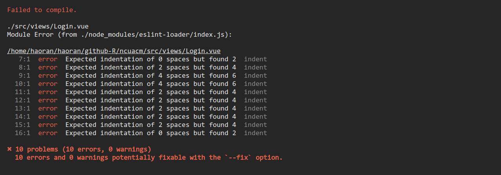

WRONG EXPECTED INDENTATION OF 0 SPACE BUT FOUND 2 INDENT

eslint是一个插件化并且可配置的JavaScript语法规则和代码风格的检查工具。这里是vue的插件检查到空格不规范，可以在项目根目录下的 .eslintrc.js 配置文件中添加以下规则来取消报错。
rules: {
indent: ['off', 2]
}
eslint是一个插件化并且可配置的JavaScript语法规则和代码风格的检查工具。这里是vue的插件检查到空格不规范，可以在项目根目录下的 .eslintrc.js 配置文件中添加以下规则来取消报错。
rules: {
indent: ['off', 2]
}